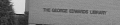

Introduction
Supreme is a free [software library](https://github.com/stefanv/supreme) that performs automated super-resolution imaging.
The main technique employed is summarized in this paper. A more detailed description is given in my PhD dissertation
Input frame, 4x enlarged (data from the VGG group, with thanks to Barbara Levienaise-Obadia, Univ. of Surrey): 
Simply stacking all 30 enlarged input images would yield:
The super-resolution result, based on the 30 input frames, using polygon interpolation is:
An article about computational science in a scientific publication is
not the scholarship itself, it is merely advertising of the scholarship.
The actual scholarship is the complete software development environ-
ment and the complete set of instructions which generated the figures.
―David L. Donoho, WaveLab and Reproducible Research, 1995, p. 5